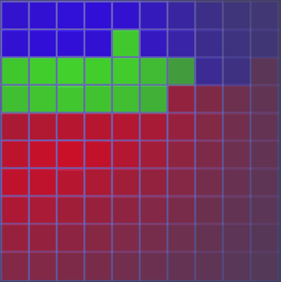

The purpose of a SOM is to convert high-dimensional data to low-dimensional data.
SOMs consist of a lattice of neurons. The lattice is usually a square or hexagonal grid.
Every neuron has a weight vector with the same dimensions as the input data
$$ \begin{pmatrix} 6.9 \\ 3.2 \\ 5.7 \\ 2.3 \\ \end{pmatrix} $$